A Comparison of Ext3 and Ext4dev
Linux Software RAID Performance Comparisons
The Problem
How does ext3 compare with ext4dev (with 2.6.27-14-server)
The Controller
- Supermicro AOC-SAT2-MV8
- 8 SATA II ports
- 64-bit PCI-X133MHz (tested in 32-bit PCI slot)
- Chipset: MV88SX6081
- Linux driver: sata_mv
- Cost: $99.99 from newegg.com
- Configuration: JBOD
The Test System
- Motherboard: Asus K8N-DRE
- Processors: Two 1.8GHz Opteron 244
- RAM: 8GB DDR400 running at 333MHz
- Slots: 1 32-bit PCI; 1 PCI Express x16
- Drives: Seagate Barracuda 7200.11 1000Gbytes ST31000333AS
- Drive cage: Supermicro CSE-M35T-1B 5-Bay Enclosure (fits in
three 5-inch chassis bays; sells for about $100-$120 from
newegg.com)
The Test Matrix
- Read Percentage: 100% (pure read), 50% (mixed), 0% (pure write)
- Random Percentage: 0% (sequential), 100% (random)
- Thread counts: 1 and 20
- Block sizes: 4k, 8k, 32k, 64k, 256k, 1m, 4m, 8m, 64m
- Targets: All 5 driver were tested simultaneously, as well as
each drive individually.
- All I/Os are issued using the O_DIRECT flag.
- All tests last 20 seconds.
Conclusion
Sequential Single Threaded Tests
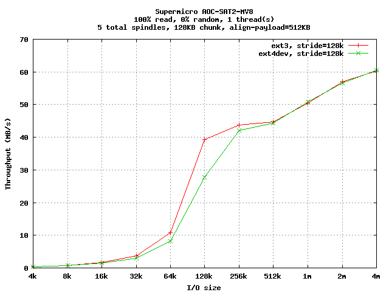
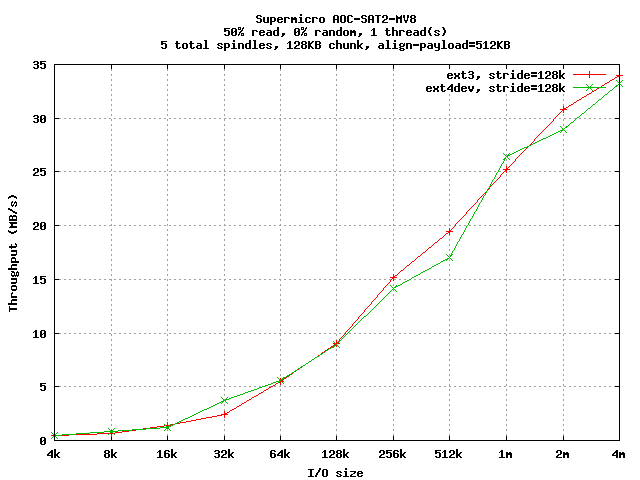
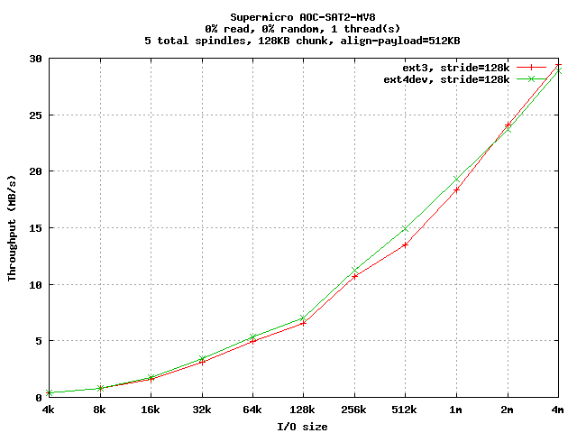
Random Single Threaded Tests
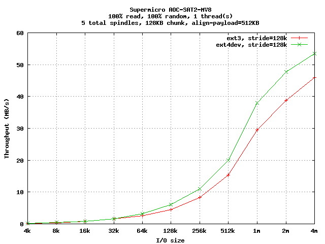
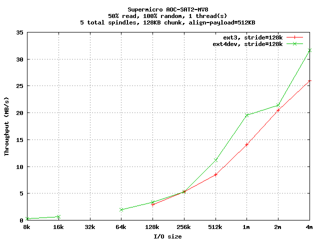
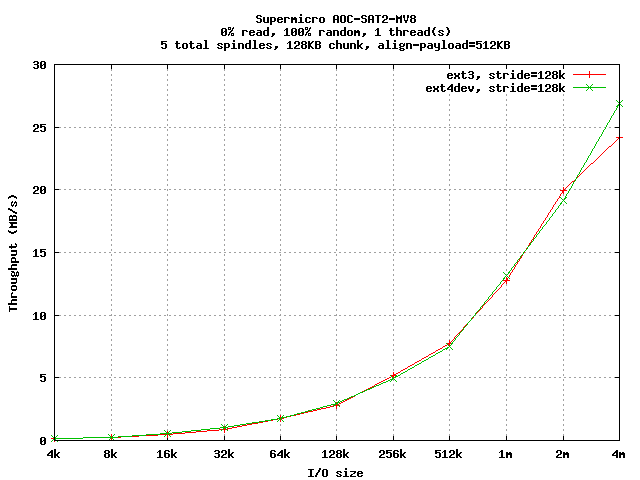
Sequential Multi-Threaded Tests
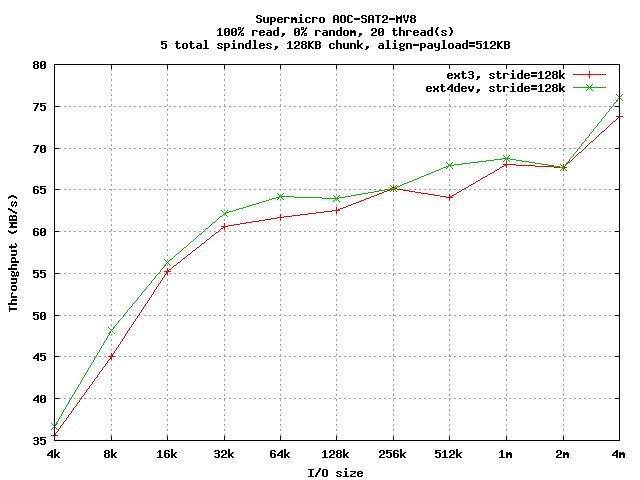
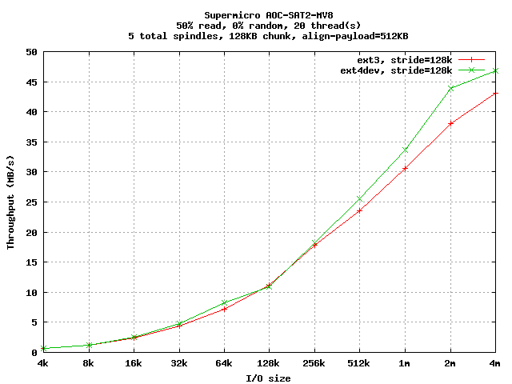
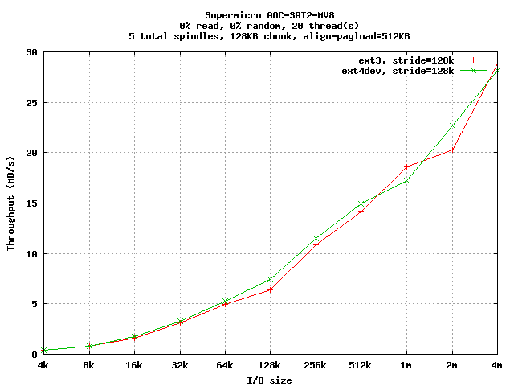
Random Multi-Threaded Tests
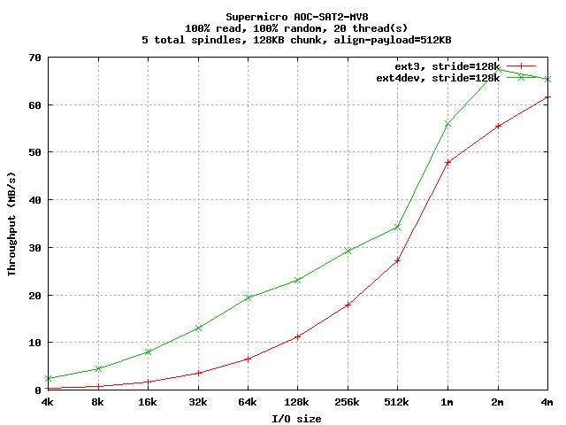
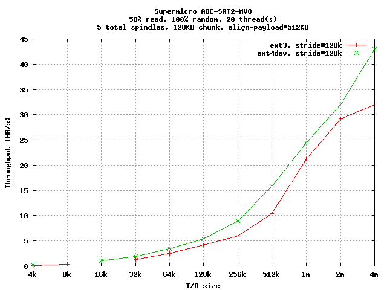
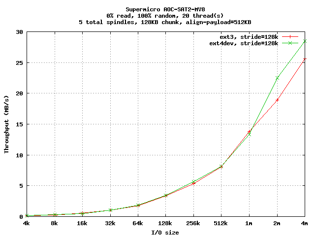